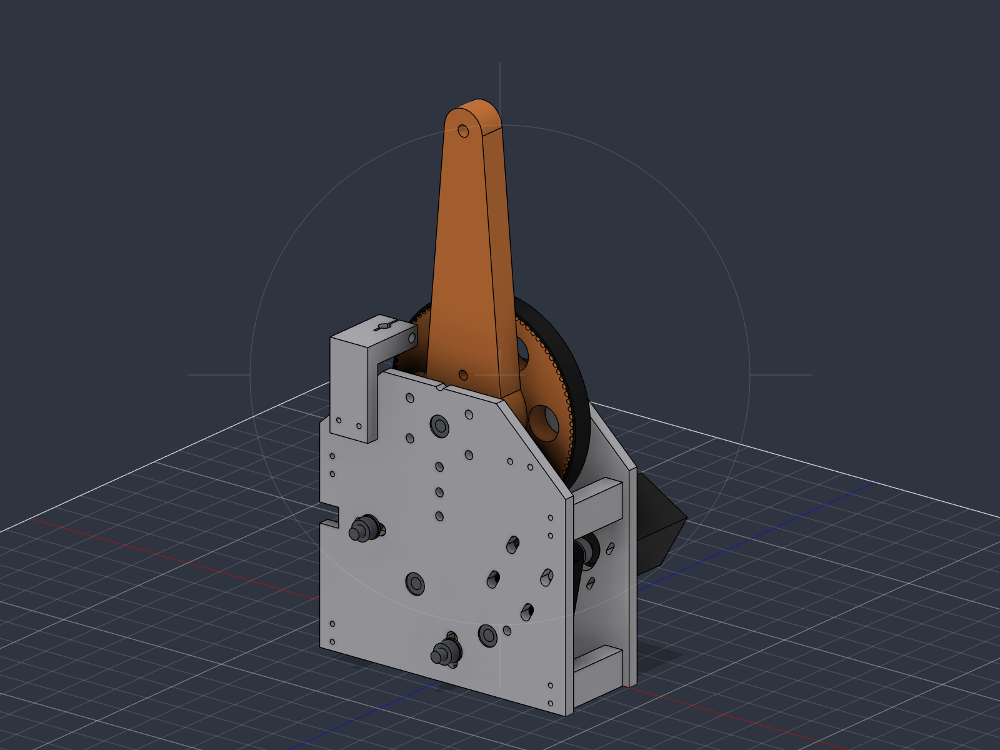

Messanleitung: Wie «locker» ist das Gelenk? (Umkehrspiel mit Gewicht)
Das ist Test 1, Variante A aus dem Messprotokoll: Motor und Treiber sind aus, der Blockierstift hält die Scheibe fest, und wir messen nur Stufe 2 und 3. Dauer: etwa 1 bis 2 Stunden mit Vorbereitung. Alle Masse in mm, Kräfte in kg und Nm.
Worum geht es überhaupt?
Jedes Getriebe hat ein kleines «Spiel», wie bei einem Zahnrad, das ein bisschen wackelt, bevor es mitnimmt. Wir ziehen am Hebel nach oben und nach unten und lesen mit der Messuhr ab, wie weit sich der Hebel bewegt, bevor die Kraft ankommt. Das ist das Umkehrspiel. Zusätzlich sehen wir, wie «weich» das Gelenk unter Last ist (Steifigkeit). Ziel: Spiel höchstens 0,3°.
Schritt 0: Das brauchst du (Checkliste)
Teil
Wofür
Da?
Gewicht 1,07 kg (z. B. Flasche mit Wasser oder Sand, mit Schlaufe aus Schnur)
zieht den Hebel dauernd nach unten
☐
Koffer- oder Federwaage bis 10 kg
damit ziehst du von unten am Hebel
☐
Küchenwaage (auf 1 g genau)
um das Gewicht genau auf 1,07 kg zu bringen
☐
Messuhr 0,01 mm mit Halter
zeigt die Bewegung des Hebels
☐
Schraube M3 × 25 (Blockierstift) und Kugelkopf- oder magnetischer Sechskantschlüssel
hält die Scheibe fest
☐
Fangschnur und weiche Unterlage (Karton, Kissen)
falls der Hebel nachgibt oder rutscht
☐
Stift, Papier oder dieses Blatt mit der Tabelle unten
Werte aufschreiben
☐
Sicherheit: 24-V-Schalter aus. Hände nie unter den Hebel oder das Gewicht. Wenn sich etwas löst, fällt das Gewicht (1 kg): Schuhe an, nicht barfuss.
Schritt 1: Die Teile erkennen
So sieht der Aufbau von der Seite aus (Blick entlang der Achse). Der Hebel zeigt waagrecht nach rechts über die Tischkante.
Hebel: der lange Arm, 190 mm von der Achse bis zur Lastbohrung.
Lastbohrung: das Loch am Ende des Hebels (Ø 8 mm). Hier hängen Gewicht und Waage.
Achse: der Drehpunkt des Gelenks.
Messzeiger mit Tastklotz: ein kleiner Arm, der auf der anderen Seite der Achse weiter nach links zeigt. Er bewegt sich mit dem Hebel mit, aber ohne Last. Die Messuhr tastet seinen Klotz ab, 64 mm von der Achse.
Messuhr: zeigt die Bewegung auf 0,01 mm genau.
Messuhrhalter: wird aussen an der rechten Wange festgeschraubt und klemmt die Messuhr senkrecht über dem Tastklotz.
Oberer Querträger: der Anschlag für den Hebel. Zwischen Hebel und Querträger bleibt ein Spalt von rund 10 mm.
Wange: die Seitenplatte (hier die hintere, nur als Umriss).
Brett: das Holzbrett, auf dem alles festgeschraubt ist.
Tischkante: das Brett liegt bündig daran. Das Gewicht hängt neben dem Tisch.
Zum Vergleich ein Bild aus dem CAD (der Hebel steht hier senkrecht; bei der Messung liegt er waagrecht):

Schritt 2: Gewicht genau auf 1,07 kg bringen
Küchenwaage einschalten, auf 0 stellen.
Füll einen Behälter (Flasche, kleiner Eimer) mit Wasser oder Sand, bis die Waage 1,07 kg zeigt (Schlaufe mitwiegen, wie sie später hängt).
Den tatsächlichen Wert aufschreiben, auch wenn er z. B. 1,06 oder 1,08 kg ist.
Warum genau? Das Gewicht erzeugt am Hebel das Moment: 1,07 kg × 9,81 × 0,190 m ≈ 2 Nm. Der Wert im Auswerter ist 1,07 kg. Wenn du 1,10 kg hast, trägst du 1,10 ein, dann stimmt die Rechnung trotzdem.
Waage prüfen: Hänge die Koffer-/Federwaage frei auf. Sie soll 0,00 zeigen. Wenn nicht, auf 0 stellen. Hänge dann das Gewicht (1,07 kg) dran: Sie soll etwa 1,07 kg zeigen (bis ca. ±0,05 kg ok). Ohne diese Kontrolle sind die Messwerte nicht brauchbar.
Schritt 3: Aufbau kontrollieren
Brett liegt bündig an der Tischkante, beide Zwingen sind fest. Drück den Hebel leicht nach unten: Nichts darf kippen oder wackeln.
Spalt: Zwischen Hebel und oberem Querträger sind etwa 10 mm Luft. Liegt der Hebel auf, ist jede Messung ungültig.
Fangschnur: Ein Ende am Gewicht, das andere an der Zwinge oder am Tisch. Die Schnur ist so lang, dass das Gewicht höchstens 30 mm fallen kann. Darunter liegt die weiche Unterlage.
Schlaufe des Gewichts: kurz, etwa 10 cm, damit das Gewicht ruhig hängt und nicht pendelt. Das Gewicht darf im Betrieb nicht auf der Unterlage aufliegen, sonst trägt die Unterlage einen Teil der Last und die Messung stimmt nicht.
Auf dem Bild sind Gewicht (blau, zieht nach unten) und Waage mit deiner Hand (rot, zieht nach oben) schon eingezeichnet. Die Waage hängt zwischen deiner Hand und dem Hebel. Du hängst sie erst in den Schritten 6 bis 8 ein.
Schritt 4: Blockierstift setzen
Was er macht: Der Stift hält die Welle A (die untere der beiden Zwischenwellen) fest. So kann der Motor die Messung nicht beeinflussen, und wir messen nur Stufe 2 und 3. Er sitzt nicht an der Hebelachse, sondern unten rechts bei Welle A.
Wo genau (Blick von der rechten Seite auf die rechte Wange):
Rot: das Loch Ø 6 mm in der rechten Wange. Dort steckst du den Schlüssel hinein. Es liegt etwa 54 mm rechts der Hebelachse und etwa 46 mm über dem Brett (bei der Welle A, 17 mm daneben).
Gelb gestrichelt: Welle A. Das Loch liegt direkt daneben, nur 17 mm rechts oberhalb davon.
Grün gestrichelt: die Hebelachse, zur Orientierung. Im Bild steht der Hebel senkrecht, die Löcher liegen aber fest in der Wange und bleiben dort, egal wie der Hebel steht.
Dahinter liegt die Scheibe GT2 72 Z auf Welle A. Sie hat 4 Löcher (Ø 3 mm), je 90° versetzt, auf einem Kreis mit 17 mm Radius um Welle A. Ganz hinten steckt in der linken Wange ein Einschmelzgewinde M3 an derselben Stelle.
Der Schnitt von oben: Du schaust durch das Loch der rechten Wange (rechts im Bild), die Schraube geht durch das Loch der Scheibe (Mitte) und dreht sich links ins Gewinde der linken Wange.
Schau durch das rote Loch Ø 6 mm hinein. Du siehst die Scheibe. Dreh den Hebel von Hand ganz langsam, bis du durch das Loch hindurch ein Loch der Scheibe siehst (mit Taschenlampe geht es leichter). Die Scheibe passt so alle 4,5° Hebelweg an die Stelle.
Schraube M3 × 25 mit dem Kugelkopf- oder magnetischen Sechskantschlüssel durch das Loch der rechten Wange einführen, durch das Scheibenloch stecken und in das Gewinde der linken Wange drehen.
Nur anlegen, nicht festziehen: Wenn du kräftig anziehst, wird die Scheibe schief gegen das Lager gezogen und verfälscht die Messung.
Hebel jetzt knapp über der Waagrechten lassen (ein paar Grad über der waagrechten Linie), nicht darunter.
Wenn die Welle blockiert ist, was misst man dann? Die Hebelachse selbst ist nicht blockiert, nur Welle A (das Ende der Stufen 2 und 3 am Motor). Der Hebel kann sich deshalb noch ein winziges Stück bewegen: Zähne, Riemen und gedruckte Scheiben geben ein wenig nach und haben etwas Luft. Genau diese kleine Bewegung misst die Messuhr (0,01 mm genau), das ist das Spiel und die Weichheit von Stufe 2 und 3. Ohne Blockade würde der Hebel einfach nach unten kippen, weil der Motor ihn nicht hält.
Die Lagen sind aus dem CAD-Skript gerechnet (Welle A bei x = 38,2 / y = 39,2 mm, Blockierstift bei x = 53,7 / y = 46,4 mm). Ob dein gedruckter Aufbau genau so aussieht, kann ich nicht sehen. Das Schnittbild ist schematisch.
Schritt 5: Messuhr einsetzen und auf Null stellen
Halter an die rechte Wange schrauben (Lage «links» für Hebel waagrecht nach rechts).
Messuhr (Schaft 8 mm) in die geschlitzte Bohrung stecken, senkrecht über den Tastklotz. Klemmschraube M3 × 25 nur leicht anziehen.
Tastspitze auf den Tastklotz absenken, bis der Zeiger sich etwa 1 bis 2 mm bewegt hat (das ist die Vorspannung). Es muss noch genug Messweg bleiben (insgesamt ca. 10 mm, entspricht etwa 5°).
Zifferblatt an der Lünette so drehen, dass der Zeiger auf 0 steht.
Zeiger auf 0: das ist dein Nullpunkt.
Beispiel: Zeiger bei 76 = 0,76 mm. Du schreibst immer die Teilstriche auf (76 Striche = 0,76 mm).
Wichtig: Wenn der Zeiger eine volle Runde macht, zähle sie mit (1 Runde = 1 mm). Notiere auch, in welche Richtung der Zeiger läuft, wenn der Hebel nach oben geht.
Schritt 6: Eigengewicht des Hebels (kurz, einmal)
Der Hebel selbst wiegt etwas und verschiebt den Nullpunkt (grob 0,1 Nm, also etwa 0,06 kg an der Waage). Prüfe es:
Gewicht noch nicht anhängen. Waage in die Lastbohrung einhängen.
Langsam nach oben ziehen und beobachten, bei welcher Anzeige die Messuhr gerade anfängt, sich zu bewegen oder der Hebel «schwebt». Das ist der Wert «Hebel schwebt».
Aufschreiben. Liegt der Wert unter 0,1 kg und kann deine Waage das nicht sauber anzeigen, schreibst du 0 und vermerkst, dass die Anzeige zu grob war.
Schritt 7: Gewicht anhängen
Gewicht an die Lastbohrung hängen. Halte es zuerst mit der Hand unten fest, dann nimm die Hand langsam weg («loslassen»): Jetzt trägt der Hebel das Gewicht allein. Er sinkt ein kleines Stück, die Messuhr bewegt sich (das ist normal).
Warte kurz, bis der Zeiger ruhig steht. Schau auf den Spalt über dem Querträger und die Fangschnur.
Du hast jetzt zwei Dinge an der Lastbohrung: Gewicht (unten) und gleich die Waage (oben).
Schritt 8: Die vier Ablesungen
Die Waage hängt in der Lastbohrung, du ziehst mit der Hand langsam senkrecht nach oben. Bei jedem Wert wartest du etwa 3 Sekunden, bis der Zeiger der Messuhr ruhig steht, und liest beide Zahlen ab (Messuhr in mm, Waage in kg). Schreib die abgelesene Waagenanzeige auf, nicht den Sollwert.
Wert 1: von unten kommend langsam ziehen, bis die Waage A zeigt (die Anzeige, die sie hat, wenn sie das Gewicht allein trägt, z. B. 0,995 kg). Dann trägt die Waage genau das Gewicht, das Moment ist 0. Messuhr ablesen.
Wert 2: weiter ziehen bis etwa 2 × A (z. B. 1,99 kg). Das sind etwa +2 Nm nach oben. Messuhr ablesen.
Wert 3: Zug langsam nachlassen bis die Waage wieder A zeigt. Wichtig: von oben kommend, nicht nochmals hochziehen. Messuhr ablesen.
Wert 4: Waage ganz lösen (Zug 0). Jetzt zieht nur das Gewicht: etwa −2 Nm. Messuhr ablesen.
Warum zwei Werte bei 1,07 kg? Beim Hochziehen (Wert 1) und beim Nachlassen (Wert 3) steht die Messuhr nicht gleich, weil das Getriebe Spiel hat und die Reibung festhält. Der Unterschied Wert 1 zu Wert 3 ist das Umkehrspiel. Der Unterschied Wert 2 zu Wert 4 zeigt, wie weich das Gelenk unter ±2 Nm ist.
Häufige Fehler:
Zu schnell gezogen oder über 1,07 kg hinausgeschossen: Dann Wert nicht gelten lassen und ganz von vorn (Zug lösen, neu beginnen).
Die Waage zieht schief: immer senkrecht nach oben ziehen.
Der Zeiger springt oder schwingt: Messuhr nicht anfassen, ruhig warten.
Dreimal wiederholen (Lauf 1, 2, 3), jeweils mit allen vier Werten. Zwischen den Läufen den Zug ganz lösen.
Schritt 9: Werte eintragen und Ergebnis ablesen
Hier ausfüllen: Messuhr in Teilstrichen (so wie sie auf dem Zifferblatt stehen, ohne umzurechnen), Waage in kg. Gewicht und «Hebel schwebt» darüber eintragen.
Wenn der Zeiger über 0 hinausläuft: Die Messuhr kennt kein Minus, sie fängt bei 99 wieder an. Läuft der Zeiger beim Hochziehen über 0 hinaus und zeigt dann z. B. 71, trägst du −29 ein (71 − 100). Läuft er in die andere Richtung über 99 hinaus und zeigt z. B. 5, trägst du 105 ein (5 + 100). Die kleine Nebenuhr zählt dabei die vollen Runden (1 Runde = 100 Striche = 1 mm).
Gewogenes Gewicht in kg (z. B. 0,995 oder die Anzeige A deiner Waage): Hebel schwebt bei (kg):
Lauf
W1 Striche
W2 Striche
W3 Striche
W4 Striche
F1 kg
F2 kg
F3 kg
F4 kg
Ergebnis
1
–
2
–
3
–
Noch nichts eingetragen.
Schritt 10: Was heisst das Ergebnis?
Spiel ≤ 0,3°: in Ordnung (Grenze für dieses Gelenk). Der Gutachter erwartete 0,05 bis 0,15°.
Streuung: Wenn die drei Läufe untereinander mehr abweichen als das Spiel selbst, ist die Messung unbrauchbar (Messuhr lose, Hebel streift, Waage wackelt). Dann Aufbau prüfen und wiederholen.
Steifigkeit: Der Gutachter schätzte 30 bis 100 Nm pro Grad.
Warnungen: Wenn der Rechner meldet, das Moment bei «Wert 1» oder «Wert 3» liege nicht bei 0, ist die Waage falsch eingestellt oder das Eigengewicht des Hebels fehlt.
Danach: Dasselbe mit Variante B (Motor bestromt, ohne Blockierstift) und in der anderen Hebellage, dann Test 2 bis 6 aus dem Messprotokoll (docs/messprotokoll-j2.md).
Vorbehalt: Die Bilder sind schematische Zeichnungen aus den Massen der Skripte. Die Abläufe und Zahlen stammen aus docs/pruefstand-j2.md und software/j2_auswertung.py. Das Bild zum Blockierstift ist aus den Massen abgeleitet und nicht an deinem Aufbau geprüft.